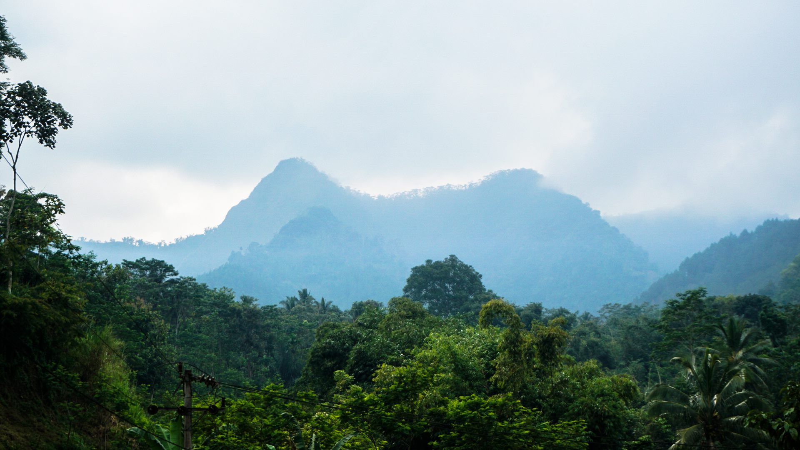
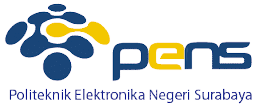

Mitra


UD KUBE PSP Maju Mapan adalah sebuah kelompok usaha bersama peternak sapi perah yang terletak di Jalan Raya Kemiri Krajan No. 48 Desa Kemiri, Kec. Jabung. Kab. Malang, Jawa Timur. Kami hadir dengan layanan dalam bidang agribisnis terutama pada penyediaan susu sapi segar (freshmilk) yang berkualitas tinggi. Prinsip amanah yang sesuai dengan syariah bisnis adalah landasan kami dalam bermuamalah selama 14 tahun kami berdiri. Kami terus berupaya untuk bisa mengedukasi dan memberdayakan peternak serta masyarakat sekitar untuk bisa maju dan mapan bersama.
Layanan simpan pinjam dan tabungan sukarela untuk peternak anggota berbasis syariah tanpa bunga dengan proses yang mudah.
Kami meneydiakan pakan ternak sapi perah berupa konsentrat yang bernutrisi tinggi dan telah teruji pada laboratorium agar kualitas susu meningkat
Pengadaan sapi khusus untuk anggota berbasis prinsip mudharabbah untuk menambah populasi sapi dan meningkatkan volume susu
Pelayanan kesehatan hewan dan inseminasi buatan untuk para anggota dengan petugas kesehatan yang telah memiliki sertifikasi dibidangnya
Kami menyediakan dan mengirimkan susu sapi segar kepada mitra dengan kualitas yang terbaik dan telah teruji pada laboratorium
Kami akan menghadirkan susu pasteurisasi dengan bahan alami yang berkeja sama dengan PENS utnuk bisa dijual di pasaran
mfakhri.aldin@gmail.com